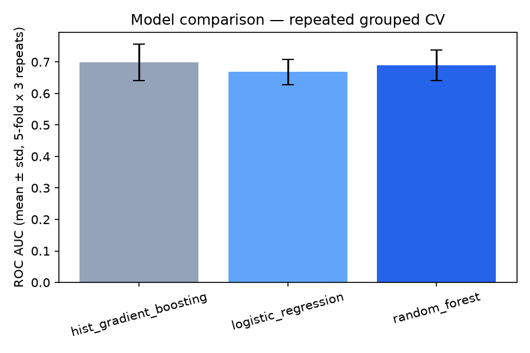
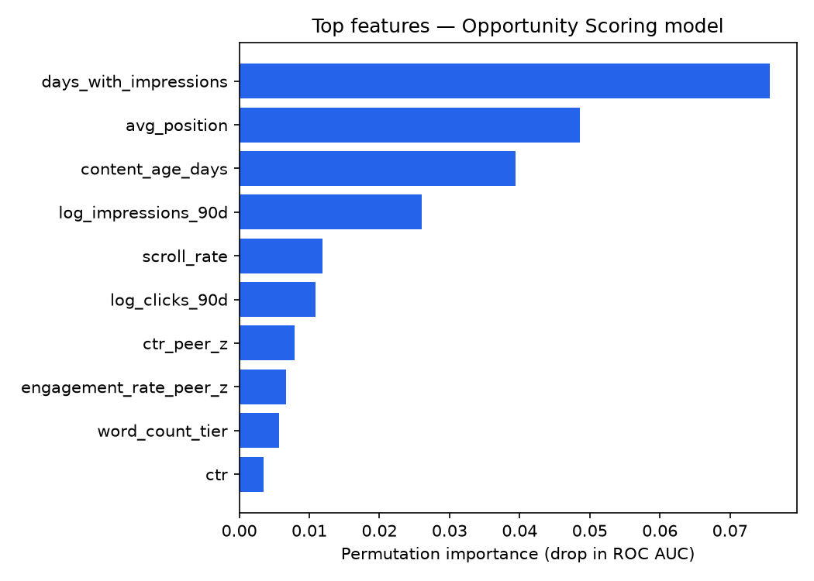

Which pages in a content library are worth an editor's attention this week,
and how should that attention be prioritized? Using the bundled 30,000-row anonymized
FlyRank slice, I built a gradient-boosted classifier on 90-day search and analytics
aggregates plus two engineered peer-relative features — how a page's CTR and engagement
compare to similar pages, not just their raw values — validated with repeated
client-grouped cross-validation to avoid overfitting to any one client's quirks. The
model separates declining from non-declining pages only moderately well on its own
(0.69 mean ROC AUC), but the top of its ranked queue is sharp: 0.92 precision in the
top 50 pages on clients it never saw in training. The deliverable is a
demand-weighted opportunity_score — decline risk multiplied by traffic
volume — so editors see the pages where being wrong is expensive first, not just the
pages the model is most confident about.
A content team can't manually re-review thousands of pages every month. Some pages are quietly losing search visibility; most aren't. The decision this work supports is simple to state and hard to do well: given limited editor time, which pages get looked at first? A model that's merely accurate isn't enough — a 90%-confident prediction about a page with 50 monthly impressions matters far less than a 60%-confident one about a page with 200,000. Ranking has to account for both.
This analysis runs on the bundled anonymized starter release —
content_refresh_anonymized.csv: 30,000 content pages across 32 pseudonymized
clients, 90-day trailing Google Search Console and GA4 aggregates, keyword context, and
content properties. No client names, domains, URLs, or credentials appear anywhere in this
repository.
Deliberately excluded from every feature set: trend_direction and
trend_pct (the label source), and the raw *_last_30d /
*_prev_30d columns they're computed from — including those would leak the
label almost perfectly, since the label is a threshold on their ratio.
content_id and client_id are used only for grouping, never as
features.
Model: HistGradientBoosting classifier, compared against logistic regression and random forest on the same features and splits.
Features beyond the standard 90-day aggregates:
log(impressions) × (1 − competition),
an interaction term for pages that are visible but sitting in an easy keyword slot.Label: is_declining_label = (trend_direction == "down") —
kept identical to the reference definition so results are directly comparable.
Validation: stratified grouped K-fold, grouped by client_id
so no client's pages appear in both the train and test side of a fold, repeated 5 folds ×
3 shuffles to report a distribution rather than a single lucky (or unlucky) split.
| Model | ROC AUC | Avg. precision | Precision@50 |
|---|---|---|---|
| Logistic regression | 0.668 ± 0.040 | 0.674 ± 0.046 | 0.732 ± 0.141 |
| Random forest | 0.689 ± 0.049 | 0.707 ± 0.043 | 0.864 ± 0.023 |
| HistGradientBoosting | 0.692 ± 0.059 | 0.707 ± 0.058 | 0.860 ± 0.089 |
Reference baseline (transparent staleness+volume rule, same repo): 0.627 ROC AUC, 0.240 precision@50. Every model here clears that floor by a wide margin, especially at the top of the ranked queue.
Single held-out client-group check (comparable in spirit to a standard train/test split): ROC AUC 0.644, precision@50 = 0.92.


The model is a moderate separator overall (0.69 AUC) but a sharp one at the top of the ranked list — those are different claims and this paper keeps them separate. The precision@50 standard deviation (±0.09–0.14 across repeats) is larger than the AUC standard deviation, meaning which clients land in a test fold shifts the top-tier precision more than it shifts overall separability — treat any single precision@50 figure as a range, not a fixed number. All results here are observed on a 90-day historical window and are decision-support for editorial review, not a causal claim about what caused any page's decline, and not an automatic publishing trigger.
git clone https://github.com/ART001-coder/flyrank-ml-internship.git cd flyrank-ml-internship pip install -r requirements.txt python work/scripts/opportunity_score_model.py python work/scripts/interpret_and_chart.py
Random seed fixed at 42 throughout. Full write-up, notebooks, and reference-pipeline comparison live in the capstone report and work/ folder.